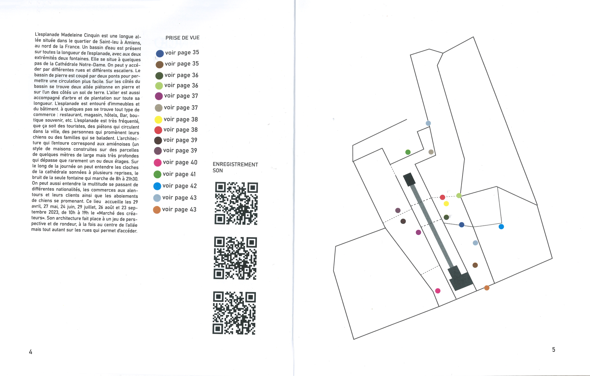
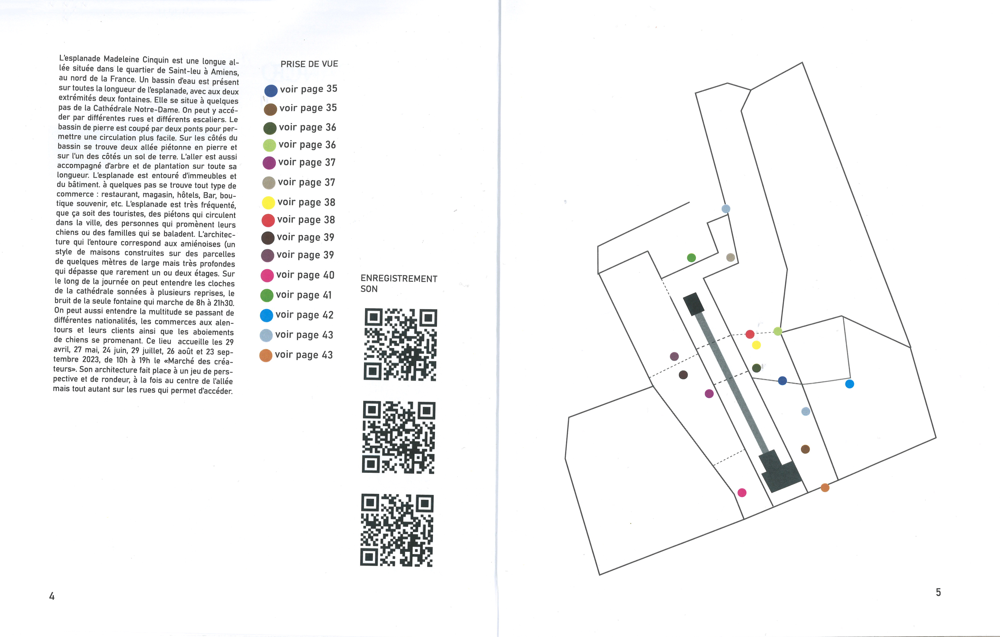

ÉTUDE D'UN LIEU
Réalisation d’une édition au format 19 cm x 27 cm. À partir d’un lieu au choix,
il a fallu photographier le lieu et l'étudier. Enregistrer les sons autour, photographier les
rues adjacentes qui mènent au lieu, les végétaux autour, l’architecture, etc.
 
